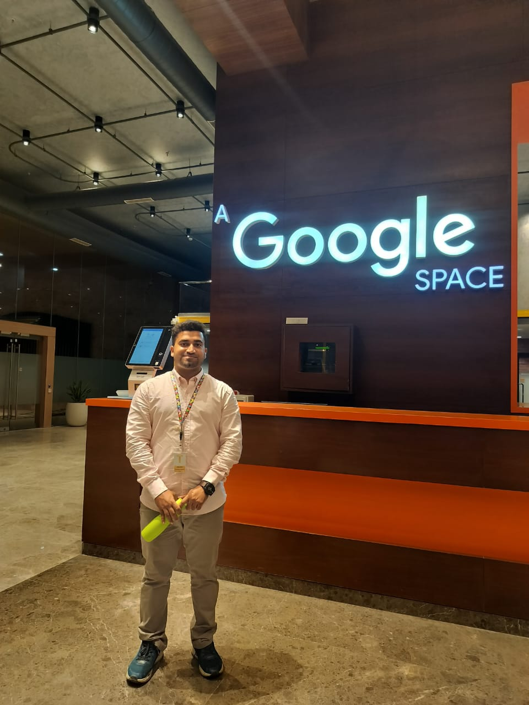

26 MAR 2024
Associate Analyst
Started in Content Engineering, supporting AI data operations and evaluation workflows.
AI · DATA · INFORMATION TECHNOLOGY
Master of IT student.
Former GlobalLogic Analyst.
Two years working at the intersection of people, data, and AI. Now building toward a career in data analytics, cybersecurity, and cloud.
Eastern Institute of Technology / New Zealand

01 / ABOUT ME
I’m Abdul, a Computer Science & Engineering graduate and current Master of Information Technology student at Eastern Institute of Technology.
At GlobalLogic, I supported Amazon and Google client projects across generative AI, data annotation, and AI-agent evaluation. My day-to-day work combined careful analytical judgment with Excel and Google Sheets reporting for production, quality, and utilization.
I’m taking that practical experience into my next chapter: building hands-on projects in data analysis and VBA, then extending into cybersecurity and cloud.
02 / PROFESSIONAL EXPERIENCE
Employed by GlobalLogic Technologies.
Supporting Amazon and Google client programs.
Started in Content Engineering, supporting AI data operations and evaluation workflows.
Designation changed to Analyst, Content Engineering.
Created and evaluated prompts and responses for AI-generated image content, including single-turn and multi-turn interactions.
Supported training-data preparation for augmented reality and computer-vision applications.
Selected for onsite client work following an internal assessment of reasoning and AI-evaluation ability.

A CHAPTER THAT SHAPED MY APPROACH
My GlobalLogic journey included offsite client delivery and approximately one year at a Google client location. Across both environments, the focus stayed the same: understand the task, apply sound judgment, and deliver consistent quality.
GLOBALLOGIC RECOGNITION
Recognized among the CoreML awardees for a positive attitude and strong performance as a new team member.
View award03 / PROJECT PORTFOLIO
Practical projects in Excel, automation,
data, security, and cloud.
I’m starting with Excel and VBA, building on the reporting and data-quality skills I used at GlobalLogic. Completed work, project write-ups, and repository links will appear here as they are published.
04 / SKILLS & TOOLS
Used in production and operational tracking.
Applied across enterprise client projects.
Learning goals and planned project areas.
05 / EDUCATION & CREDENTIALS
Eastern Institute of Technology
Developing my next chapter in information technology, alongside a growing portfolio of practical work.
Jawaharlal Nehru Technological University Hyderabad
Vijay Rural Engineering College, Nizamabad.
Graduated in First Class.
Udemy · Kyle Pew / Office Newb · 22.5 hours · Completed 23 May 2026
Course completion certificate2024 result · CEFR C1 · Listening 7.5 / Reading 7.0 / Writing 7.0 / Speaking 6.5
Includes Reading One Skill Retake, October 2024Planned certification · Cybersecurity learning pathway
Planned certification · Cloud learning pathway
06 / WHAT’S NEXT
I’m interested in opportunities in data analytics, IT analysis, cybersecurity, and cloud support where careful thinking and a willingness to learn make a difference.
Interested in my experience?
Contact me through the profile or application where you found this portfolio.